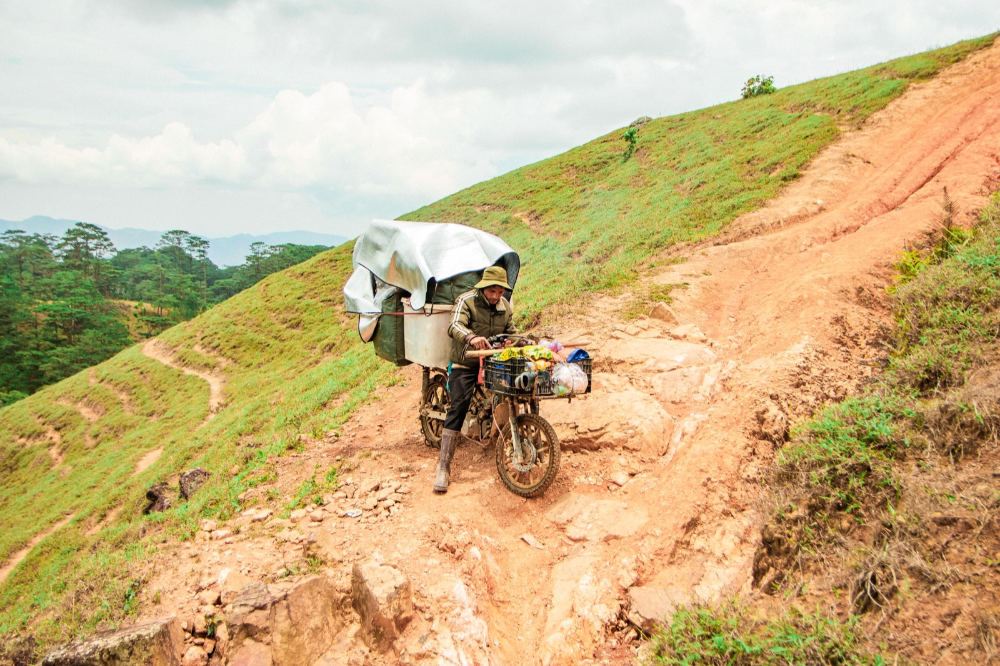

베트남에서 오토바이가 고장 났을 때: 여행자 대처법

오토바이가 꺼졌다면 할 일은 차량 흐름 한가운데서 고치는 것이 아니라 먼저 안전한 곳으로 가는 것입니다. 베트남 도시에는 오토바이 정비소가 흔하고, 대부분의 일상적인 고장은 정비사에게 보여주는 편이 쉽습니다.
1단계. 도로에서 벗어나기
갑자기 멈추지 마세요. 방향지시등이나 비상등을 켜고, 뒤 차량을 확인하고, 부드럽게 가장자리로 이동하세요. 빠른 도로에서는 동승자와 함께 흐름에서 떨어지세요. 밤에는 휴대폰 손전등을 쓰되 차로 위 오토바이 앞에 서지 마세요.
2단계. 당연한 것부터 확인
- 연료가 있는지;
- 시동 스위치와 엔진 킬 스위치가 켜져 있는지;
- 차단 기능이 있는 모델이라면 사이드 스탠드가 올라갔는지;
- 배터리가 방전되지 않았는지;
- 새로 생긴 오일·휘발유 웅덩이가 없는지.
엔진을 분해하지 말고 뜨거운 배기구를 만지지 마세요. 연료 냄새, 연기, 눈에 띄는 누유가 있으면 다시 시동을 걸지 마세요.

정비소 찾는 법
지도에서 sửa xe máy(오토바이 수리)를 검색하거나 가까운 카페에 물어보세요. 정비사에게 증상 영상과 모델을 보여주세요. 수리 전에 원인, 부품값과 공임을 확인하세요. 비싼 부품을 교체하면 기존 부품을 보여달라고 하세요.
고장 난 오토바이 옮기기
정비소가 가깝고 바퀴가 잘 돌면 조심히 밀고 가도 됩니다. 먼 거리라면 정비소에 정비사나 적절한 운송 수단을 보내달라고 하세요. 다른 오토바이에 줄로 묶어 끄는 위험한 견인에는 동의하지 마세요.
렌트한 오토바이라면
먼저 렌트 업체에 연락해 위치, 사진, 짧은 영상을 보내세요. 합의 없이 큰 수리를 맡기지 마세요: 계약서에 누가 정비소를 고르고 비용을 내는지 정해져 있을 수 있습니다.
내 오토바이라면
판매자나 믿을 만한 정비소 연락처, 등록증과 번호판 사진을 휴대폰에 보관하세요. 수리 후에는 무엇을 교체했는지 적어 두세요. 정기 정비가 긴급 수리보다 쌉니다 — 주요 주기는 오토바이 관리 글에 있습니다.
도로용 미니 키트
충전된 휴대폰, 보조배터리, 약간의 현금, 우비, 정비소 연락처가 경험 없는 큰 공구 세트보다 유용합니다. 장거리라면 타이어, 브레이크, 라이트, 연료량도 확인하세요.
요약
안전이 먼저, 그다음 간단한 확인과 정비사 연락. 누유나 연기가 있으면 시동을 걸지 말고, 위험한 견인에 동의하지 마세요.